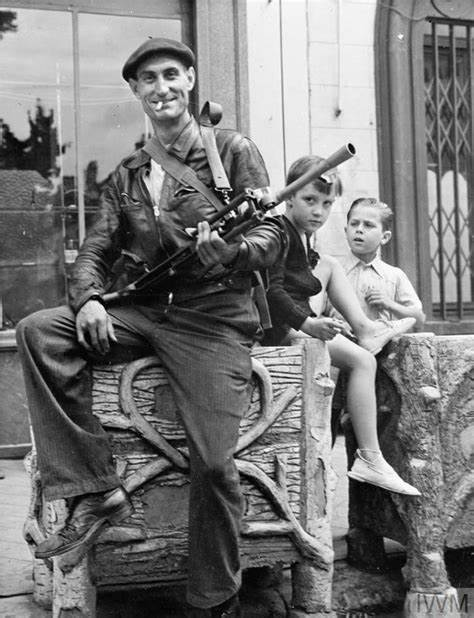
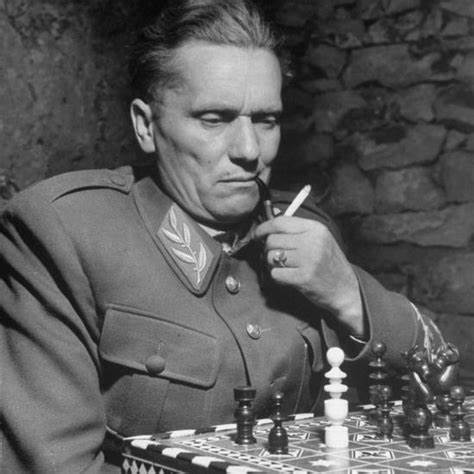
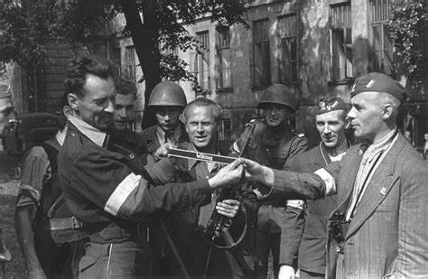
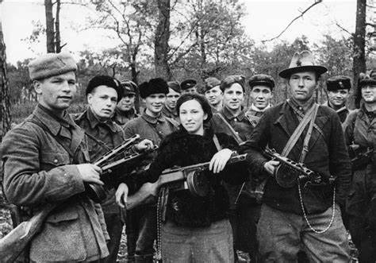
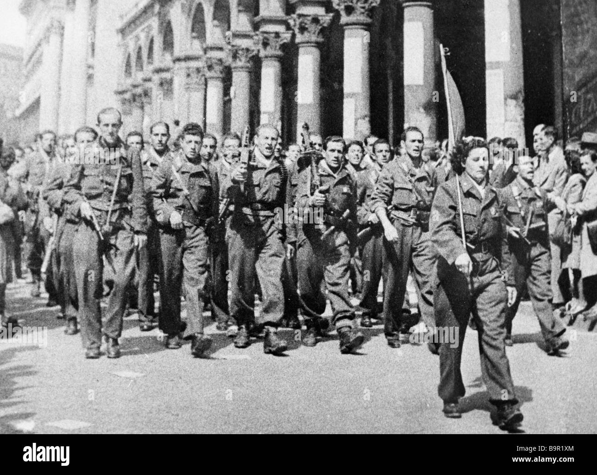

Movimentos de Resistência na Segunda Guerra Mundial
Durante a Segunda Guerra Mundial, diversos movimentos de resistência surgiram em países ocupados pelas forças do Eixo. Esses movimentos desempenharam um papel crucial na luta contra a ocupação e na libertação de seus países. Aqui estão alguns dos mais notáveis:
1. Resistência Francesa
A Resistência Francesa foi composta por grupos de guerrilheiros que realizaram sabotagens, espionagem e ataques contra as forças alemãs. Eles também ajudaram a coordenar o apoio aos Aliados durante o Desembarque da Normandia.
2. Partidários Iugoslavos
Os Partidários Iugoslavos, liderados por Josip Broz Tito, foram um dos movimentos de resistência mais eficazes da guerra. Eles realizaram operações de guerrilha contra as forças de ocupação alemãs e italianas.
3. Resistência Polonesa
A Resistência Polonesa, incluindo o Exército da Pátria (Armia Krajowa), foi fundamental na luta contra a ocupação nazista. Eles organizaram a Revolta de Varsóvia em 1944, uma das maiores insurreições da guerra.
4. Partidários Soviéticos
Os Partidários Soviéticos operaram atrás das linhas inimigas, realizando sabotagens e ataques contra as forças alemãs. Eles desempenharam um papel importante na Frente Oriental.
5. Resistência Italiana
A Resistência Italiana, composta por diversos grupos antifascistas, lutou contra as forças alemãs e o regime fascista de Mussolini. Eles foram essenciais na libertação da Itália.
